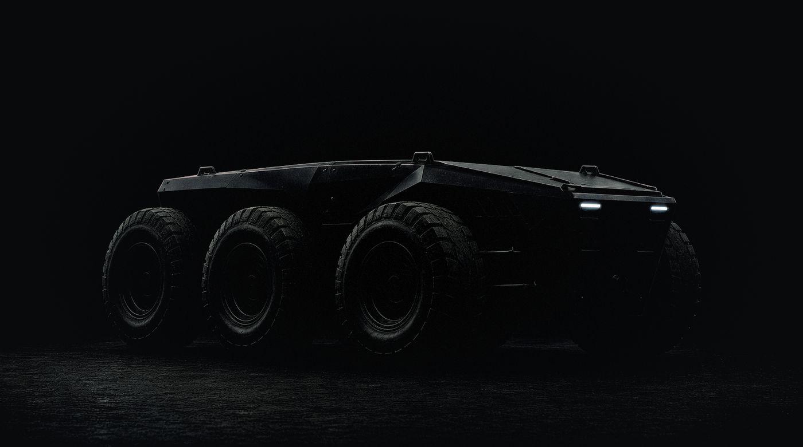
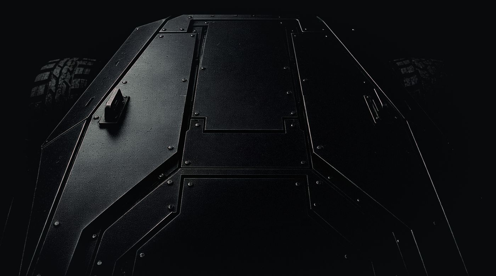
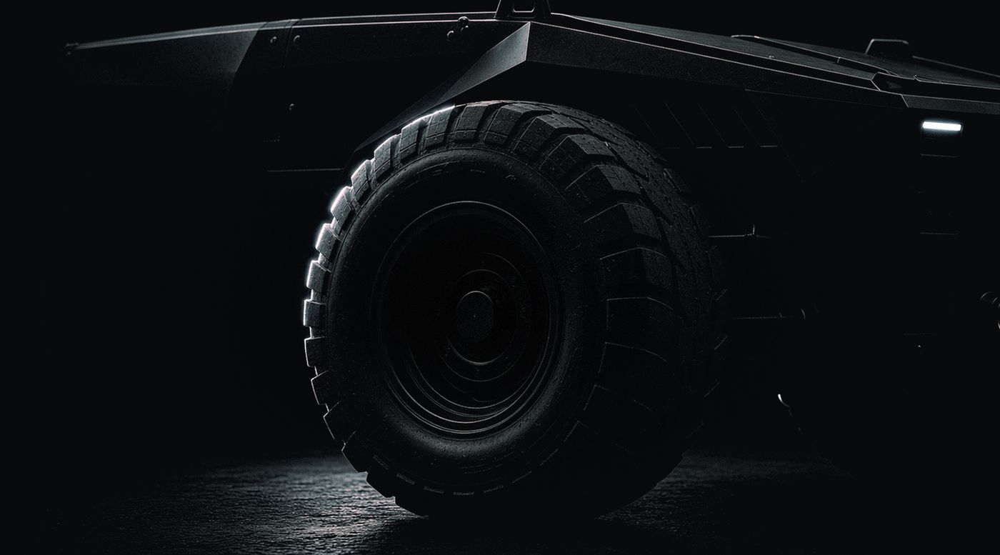

01 / 04
ENGINEERING
Engineering modules
A future area focused on integrating tools for remote technical inspection, measurements, and authorized auxiliary operations.

The project is built on a unified robotic architecture that combines wheeled and tracked platforms, interchangeable equipment, electronic systems, and control software tools.
Different NOMAD configurations use common design principles, compatible interfaces, and a unified digital infrastructure.
From a compact transport robot to a specialized ground platform — the system’s purpose is determined by its design and installed equipment.
A universal robotic base instead of many narrowly specialized solutions
Ground robotic systems can be used for a wide range of tasks, but developing separate machines for each scenario increases the complexity of production, maintenance, and operation.
NOMAD takes a different approach.
A unified technology architecture makes it possible to use common electronic components, software, interfaces, and maintenance tools across different types of ground platforms.
Interchangeable modules extend the functionality of the base chassis without the need to create a fully independent system.
One architecture. Different configurations. A shared ecosystem.


NOMAD W is an advanced 6×6 wheeled platform designed for integrating interchangeable equipment and performing transport and auxiliary tasks.
NOMAD T is an advanced tracked version of the family, designed to use compatible modules on an alternative undercarriage.
A modular configuration for carrying equipment, tools, consumables, and other authorized cargo.
Interchangeable cargo decks, mounts, and options for placing transported items are planned.
A specialized configuration for moving people who need evacuation, using the designated transport equipment.
Development requires a separate assessment of stability, passenger safety, mount reliability, and operating conditions.
A configuration with compatible cameras and sensors for obtaining visual information and remotely inspecting objects.
Integration of optical modules, recording equipment, and diagnostic tools is planned.
A configuration for hosting compatible network equipment and setting up a temporary local communications infrastructure.
Integration with HEX hardware and software solutions is planned.
Engineering modules
A future area focused on integrating tools for remote technical inspection, measurements, and authorized auxiliary operations.
Mobile platform for UAVs
A research area focused on carrying, transporting, and servicing compatible small unmanned aircraft.
Unified electronic architecture
Unified computing components, diagnostic interfaces, software modules, and configuration management tools.
Power system
A common architecture for power supply, battery component monitoring, power system diagnostics, and maintenance.
Device information in one interface
The operator gets access to authorized control functions, camera feeds, the status of key components, and diagnostic messages.
The interface adapts to the available equipment and platform configuration.
Centralized tracking of robotic systems
A unified information system makes it possible to keep a registry of platforms, track their technical condition, record installed equipment, and plan maintenance.
Build your own equipment for NOMAD
Documented mechanical and software interfaces make it possible for third-party engineering teams to develop compatible modules.
Open APIs and SDKs can be used to create additional software tools and integrations.
New tasks without a complete platform redesign
Unified interfaces provide for installing compatible additional equipment.
The modular architecture simplifies product line development and the reuse of engineering solutions.
A unified information management environment
NOMAD is designed to integrate with AGATA to display data from compatible devices, technical status, documentation, and available information services.
The complete history of every device
Each platform will be able to have a digital record card with information about the model, installed equipment, software versions, maintenance, and diagnostic results.
From remote control to intelligent functions
NOMAD’s development includes research into automated diagnostics, navigation assistance functions, and safe movement.
Automated functions must undergo separate verification and allow for operator oversight.
A platform you can extend
NOMAD is being designed as a modular robotic ecosystem with the ability to integrate third-party hardware.
Open integration interfaces make it possible to expand the family’s functionality without having to disclose the source code of the entire software platform.
NOMAD — the ground robotics component of the Darlein Defense ecosystem
NOMAD is evolving both as a standalone family of robotic platforms and as part of the company’s overall technology architecture.
Integration with AGATA provides for centralized display of technical data, access to information services, and tracking of compatible robotic devices.
Compatible HEX network modules are considered one of the options for integrating NOMAD into a distributed digital infrastructure.
Integration with compatible visual systems is designed to provide additional information for remote inspection and observation.
In the future, ELZA may use NOMAD technical and operational data to analyze equipment reliability, detect faults, and plan maintenance.
A unified software architecture forms the basis for compatibility across different generations and configurations of robotic platforms.
Darlein Defense is developing NOMAD as an advanced family of modular ground robotic systems.
We are interested in working with electronics developers, mechanical component manufacturers, and specialists in robotics, industrial design, and software.
We invite you to discuss joint research, prototyping, development of compatible hardware, and manufacturing cooperation.
We reply within two business days.